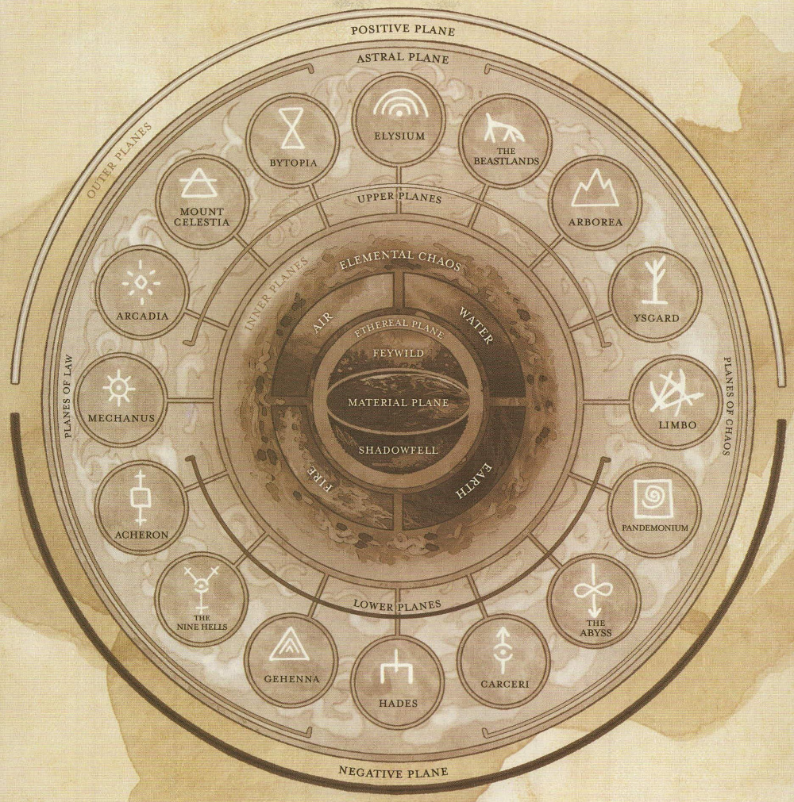

Seven Moons - Dicates of Ahm
The ball of flesh and parchment whispers to your cat-mind of a pleasing paradise, a place of endless tangles of thread, small bugs, fish, and shiny stones.
The Book has a task for you...
Thank you for your patronage of the Vault, I, Sage Willa Crabtree have composed the following synopis on 'demons and the Demogorgan' per your inquiry. Complaints, concerns, and compliments may be paid at the front desk.
Demons are outsiders, sentient entities whose existence is tied to a plane of reality other than our own. Our plane is known as the 'Prime Material' plane, the plane of demons is known as the 'Abyssal' plane. I have attached a simple cosmological diagram of the known planes below. Note the Abbysal plane at the bottom right.

Most planes embody some aspect of the prime material, and provide creative energies for components of reality on the prime. For example we could have no water without the elemental plane of water. Similiarly it is believed that we could have no spite, no blind rage, none of the pure cruelty observed in some children without the abyss. The picture is less simple than that of elemental water as the evil and chaotic aspects of the multiverse are concentrated across several planes.
The Abyss is a fatal plane for non-demons, and has over 600 documented layers. Demon lords rule over portions of the abyss, and fight each other for control of more. Some layers are nothing but choking smoke, others great deserts with slabs of rusted metal rotting in the sands... The plane is the seat of elemental chaos and primordial evil, and it's spawn embody this ethos in their actions.
Demons, also known as tanar'ri, are insane by prime material standards. They are devoted to death, destruction, and the will to power. The chaos of the abyss warps them into many horrid forms, and there is a hierarchy among them though it is not well known, larger generally means more important. There are also several particularly powerful demons, the demon lords. They occaisonally manage to slay one of their number and research on them is dangerous... according to the Black Scrolls of Ahm there are 11 lords, though other works cite less. The know lords are:
- Baphomet
- Dagon
- Demogorgan
- Fraz-Urb'luu
- Grazzt
- Jubliex
- Orcus
- Pale Night
- Pazuzu
- Yeenoghu
- Zuggtmoy
Research on Demogorgan is sparse, and the tomes detailing demonology dangerous to open. Demogorgan has two heads and two minds, each seeks domination of the other. Demogorgan is the self-styled prince of demons, the strongest of the lords. His (their) touch is said to rot flesh from bones and their gaze causes madness. Reports of a small cult dedicated to this fiend report the faithful to all have grown a second, subversive head with a distinct personality. One initiate confessed to having heard the head's personality whispering advice to him long before the head took physical form...